TEMA 1-2
ESTRUCTURA ATÓMICA Y
NUCLEAR, PRODUCCIÓN E
INTERACCIÓN CON LA
RADIACIÓN
Manuel Ángel Benito Bejarano
Formación de Residentes en P.R., Complejo Asistencial de Zamora, Nov. 2026
Las presentaciones estarán disponibles por correo electrónico.
Otros recursos de formación: Cursos Operadores y Supervisores CSN-Ciemat:
http://csn.ciemat.es/MDCSN/portal.do?
Otras dudas: Servicio Radiofísica, tlf. 48998
Formación de Residentes en P.R., Complejo Asistencial de Zamora, Nov. 2026
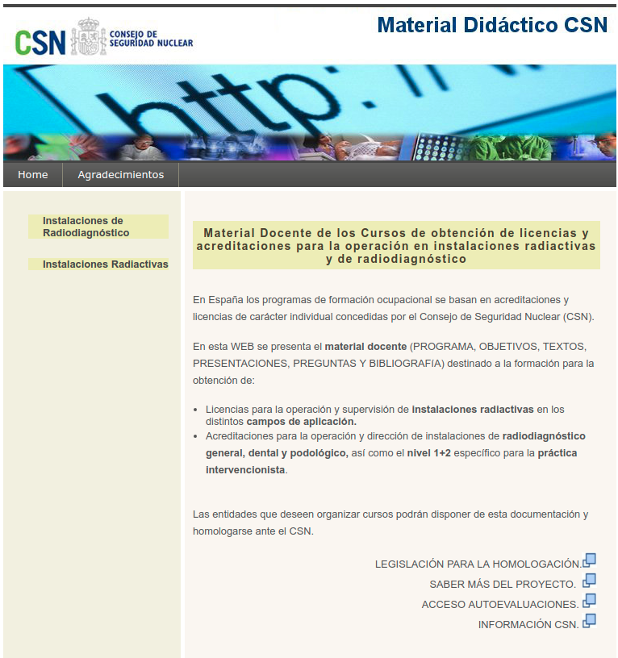
Formación de Residentes en P.R., Complejo Asistencial de Zamora, Nov. 2026
ESTRUCTURA DE LA MATERIA:
MOLÉCULAS, ÁTOMOS Y
PARTÍCULAS FUNDAMENTALES
RADIACIÓN
ELECTROMAGNÉTICA
Formación de Residentes en P.R., Complejo Asistencial de Zamora, Nov. 2026
"Si en algún cataclismo fuera destruído todo el conocimiento científico y solamente pasara una frase a la generación siguiente de criaturas, ¿cuál enunciado contendría el máximo de información en el mínimo de palabras? - Yo creo que es la hipótesis atómica, que todas las cosas están formadas por átomos -pequeñas partículas que se mueven con movimiento perpetuo, atrayéndose unas a otras cuando están separadas por una pequeña distancia, pero repeliéndose cuando se las trata de apretar una contra otra. En esa sola frase, verán ustedes hay una cantidad enorme de información referente al mundo, si se aplica sólo un poco de imaginación y pensamiento."
Richard Feynman
"Feynman Lectures on Physics", (Vol.1, Cap.1, Sec.1-2)
Formación de Residentes en P.R., Complejo Asistencial de Zamora, Nov. 2026
EL ÁTOMO
AZX
• Toda la materia está constituida por átomos
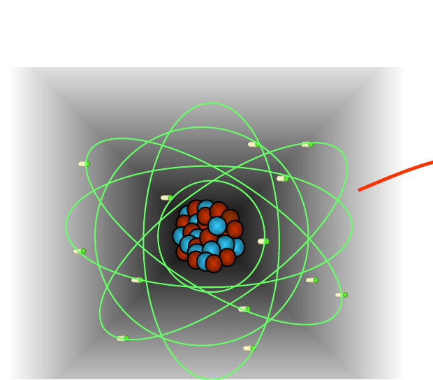
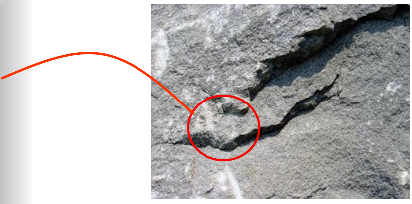
El átomo es la cantidad más pequeña de un elemento que conserva sus propiedades químicas.
Los átomos de cada elemento son iguales entre sí, pero distintos de los de otros elementos
Los compuestos químicos se forman por la combinación de los átomos de los distintos elementos
Formación de Residentes en P.R., Complejo Asistencial de Zamora, Nov. 2026
Los compuestos químicos se forman por la combinación de los átomos de los distintos elementos (Moléculas)
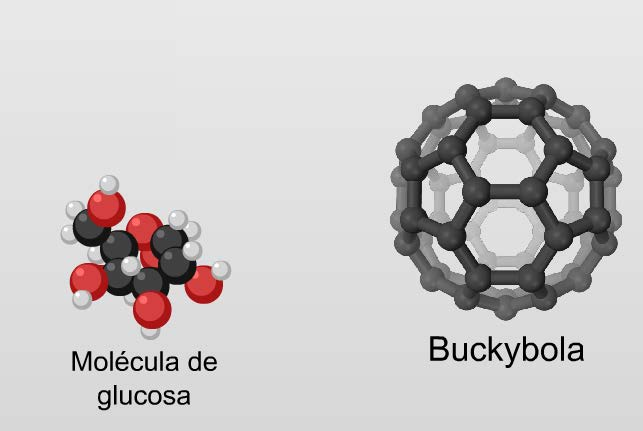
Las propiedades de las moléculas son diferentes a las de los átomos que las conforman
Formación de Residentes en P.R., Complejo Asistencial de Zamora, Nov. 2026
●Partícula fundamental (Leptón)
●Símbolo: e - , β -
●Tiene carga eléctrica negativa(-1)
– Es la partícula libre con la carga más pequeña
– Interacciona con otras partículas cargadas
– Es la partícula atómica con la masa más pequeña
●Antipartícula es el Positrón (carga +1, Símbolo e + , β + )
Formación de Residentes en P.R., Complejo Asistencial de Zamora, Nov. 2026
●Partícula no fundamental (Hadrón, compuesta de quarks)
●Símbolo: p
●Su antipartícula es el antiprotón.
●Tiene carga eléctrica positiva (+1) (Igual a la del electrón pero de signo contrario)
●Interacciona con partículas cargadas
●Su masa es mucho mayor que la del electrón.
Formación de Residentes en P.R., Complejo Asistencial de Zamora, Nov. 2026
●Partícula no fundamental (Hadrón, compuesta de quarks)
●Símbolo: n
●No tiene carga.
●No interacciona mediante la fuerza electromagnética.
●Interacciona con neutrones y protones mediante fuerza fuerte
●Su masa es un poco mayor que la del protón
Formación de Residentes en P.R., Complejo Asistencial de Zamora, Nov. 2026
El átomo es muy pequeño, por eso necesitamos definir unidades convenientes
| DIMENSIONES |
|---|
| Átomos | 10-10 m |
| Núcleo | 10-15 m |
1 u.m.a. = Unidad atómica de masa= 1/12 átomo 12C (Carbono con 6 p + 6 n)
1 uma = 1,6606 x 10-27 Kg
1 kg = 1/(1,606 x 10-27 uma) = 6,22 x 1026 uma
| MASA |
|---|
| Neutrón | ~ 1,008 u.m.a. = 1,675 · 10 -27 kg |
| Protón | ~ 1,007 u.m.a. = 1,673 · 10 -27 kg |
| Electrón | 1/1836 u.m.a. = 9,11 · 10 -31 kg |
Múltiplos
Mili = 10-3
Micro = 10-6
Nano = 10-9
Pico = 10-12
Fermi = 10-15
Kilo = 103
Mega = 106
Giga = 109
1 eV = energía cinética que adquiere un e, inicialmente en reposo, cuando se le somete a una diferencia de potencial de 1 voltio.
| Energía |
|---|
| Electronvoltio | eV | |
| Kiloelectronvoltio | KeV | 1000 eV = 103 eV |
| Megaelectronvoltio | MeV | 1000000 eV = 106 eV |
| Gigaelectrovoltio | GeV | 1000000000 eV = 109 eV |
Podemos expresar la masa con unidades de energía empleando las ecuación de Einstein: E = m c2 donde c = 3 x 108 m/s.
Formación de Residentes en P.R., Complejo Asistencial de Zamora, Nov. 2026
Radiación EM: propagación de energía sin el soporte de un medio material.
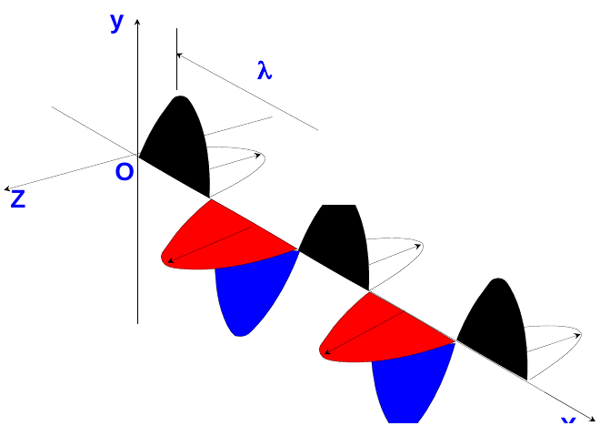
Está formada por dos campos, eléctrico (E) y magnético (B), que se encuentran en fase y cuyos planos de propagación son perpendiculares.
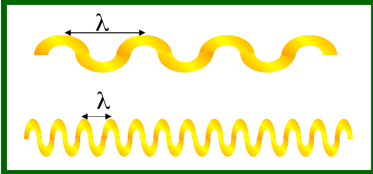
La velocidad de propagación en el vacío de las ondas EM es constante: c = 3 x 108 m/s
Para todas las ondas EM se cumple la relación:
c = ν λ
Todas las ondas se caracterizan por: λ y ν
λ = longitud de onda= distancia entre dos puntos de la misma fase.
ν = frecuencia= número de oscilaciones por segundo
Formación de Residentes en P.R., Complejo Asistencial de Zamora, Nov. 2026
Órdenes de magnitud de la energía que transportan los fotones:
• Microondas: 0,0001-0,01 eV
• Luz visible: 1 eV
• Rayos X: 1.000-100.000 eV
• Rayos gamma: 10.000-1.000.000 eV
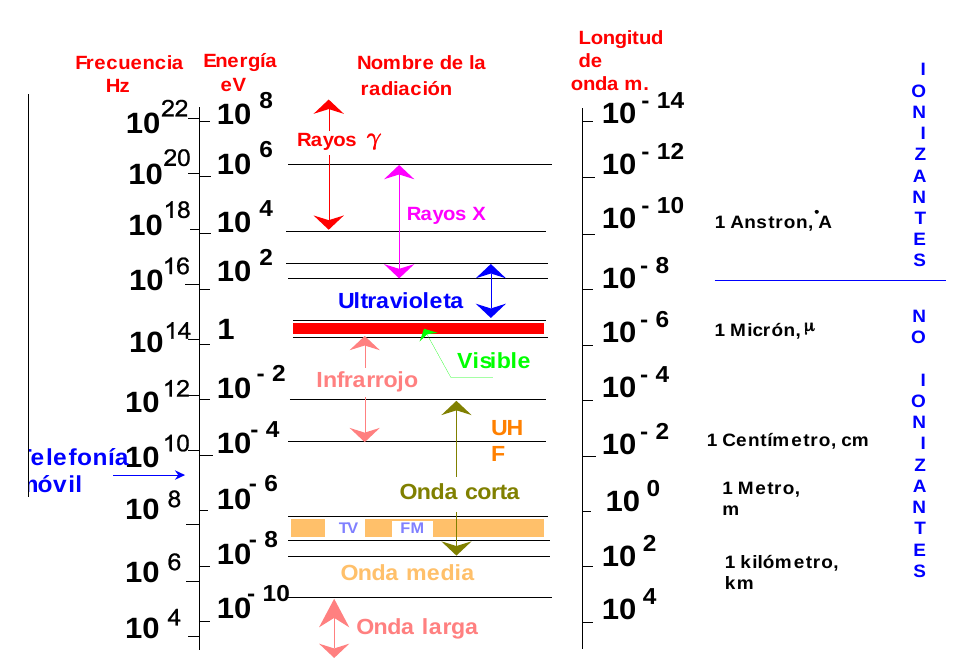
La radiación X y gamma posee suficiente energía como para “arrancar” electrones a los átomos del medio de forma significativa: radiaciones ionizantes
Formación de Residentes en P.R., Complejo Asistencial de Zamora, Nov. 2026
Los fenómenos físicos asociados a la Radiación EM sólo se pueden explicar si se le asocia una dualidad en el comportamiento:
❖ Onda
❖ Partícula o corpúsculo = FOTÓN
Fotón: corpúsculo de energía sin soporte material, equivalente a una energía cinética:
E = h · ν = h · c/λ
donde h = 6,62 · 10-34 J·s. (Cte de Planck)
❖ El carácter ondulatorio explica los fenómenos de interferencia, difracción y refracción.
❖ El carácter corpuscular explica los fenómenos de interacción con la materia.
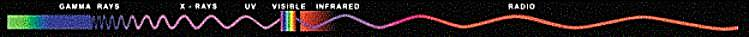
Formación de Residentes en P.R., Complejo Asistencial de Zamora, Nov. 2026
●Niveles: Sustancia→Molécula→Átomo→Núcleo->Partícula
●Radiación electromagnética->Fotones
Formación de Residentes en P.R., Complejo Asistencial de Zamora, Nov. 2026
ESTRUCTURA ATÓMICA
PROCESOS A NIVEL ATÓMICO

Formación de Residentes en P.R., Complejo Asistencial de Zamora, Nov. 2026
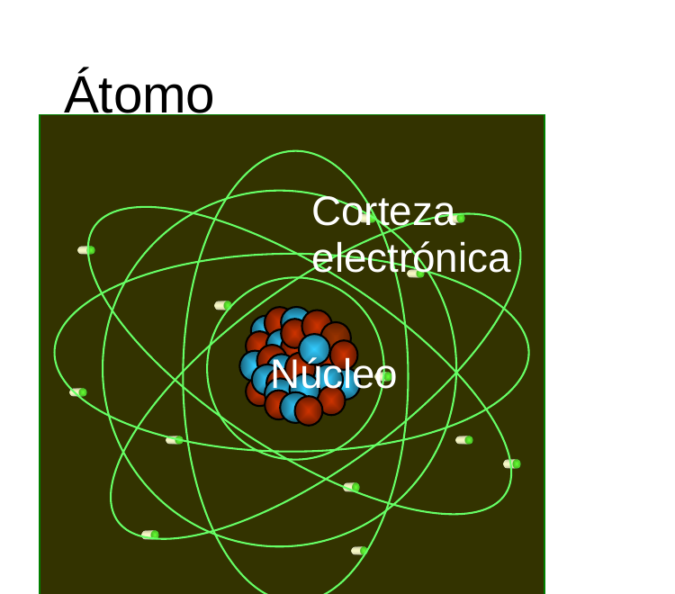
Tamaño relativo núcleo-átomo
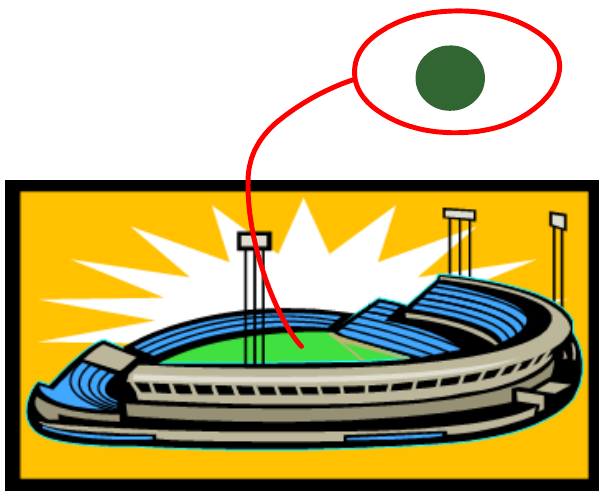
¡¡Guisante en un
campo de fútbol!!
Corteza electrónica: electrones girando alrededor del núcleo
Formación de Residentes en P.R., Complejo Asistencial de Zamora, Nov. 2026
-
Modelo de Bohr: Representamos el átomo con los electrones girando alrededor del núcleo (similar a los planetas girando alrededor del sol)
-
Las energías que pueden tener los electrones en la órbita adoptan valores discretos
-
En realidad modelo real es un poco más complejo (modelo mecánico-cuántico, distribuciones de probabilidad, orbitales)
Formación de Residentes en P.R., Complejo Asistencial de Zamora, Nov. 2026
CONDICIONES NORMALES:
Átomo eléctricamente neutro: nº electrones = nº protones
Estado fundamental del átomo: los e- están ocupando los niveles de menor energía posible
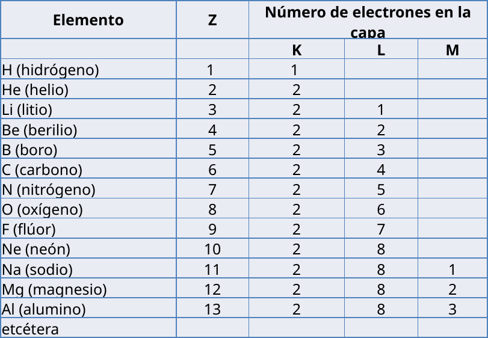
Formación de Residentes en P.R., Complejo Asistencial de Zamora, Nov. 2026
La energía de ligadura de los electrones varía con el radio de la órbita en que se encuentren.
Representación del átomo en su estado fundamental (Mínima energía)
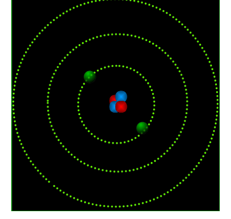
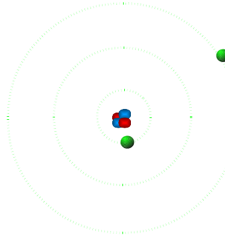
Si los electrones tienen energía suficientes pasan a órbitas más alejadas del núcleo
Formación de Residentes en P.R., Complejo Asistencial de Zamora, Nov. 2026
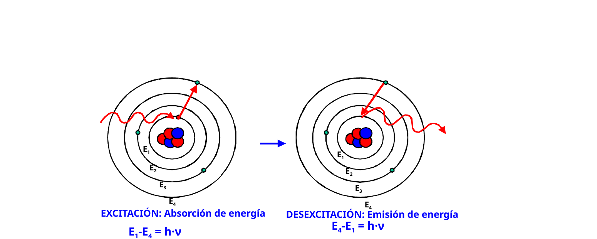
Átomo excitado: alguno de los electrones corticales se encuentra en un estado energético superior al inicial
El átomo se desexcitará (en unos 10-8 s) volviendo el electrón a la corteza, emitiendo un fotón de energía igual a la diferencia entre los dos niveles implicados en el salto
Formación de Residentes en P.R., Complejo Asistencial de Zamora, Nov. 2026
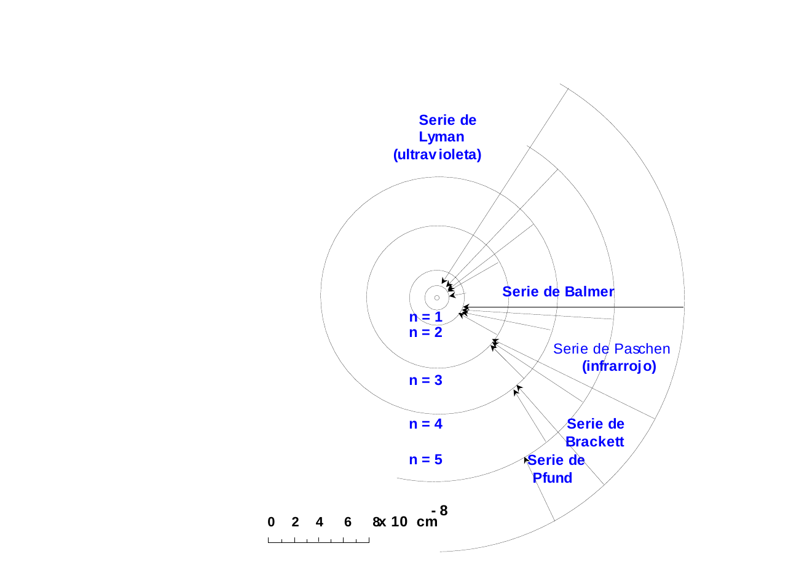
Formación de Residentes en P.R., Complejo Asistencial de Zamora, Nov. 2026
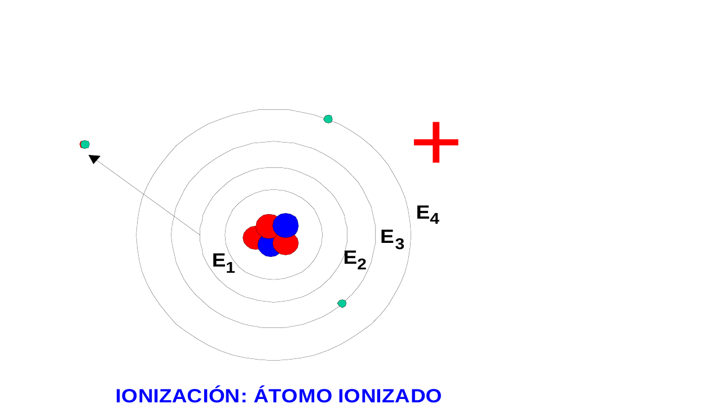
Átomo ionizado: un electrón adquiere energía suficiente (potencial de ionización) y se escapa del átomo. El átomo queda cargado positivamente.
Formación de Residentes en P.R., Complejo Asistencial de Zamora, Nov. 2026
- Estructura del átomo: Núcleo +Corteza
- Niveles y estados atómicos
- Procesos atómicos, excitación e ionización
Formación de Residentes en P.R., Complejo Asistencial de Zamora, Nov. 2026
ESTRUCTURA NUCLEAR
PROCESOS A NIVEL NUCLEAR
RADIACTIVIDAD Y REACCIONES
NUCLEARES
Formación de Residentes en P.R., Complejo Asistencial de Zamora, Nov. 2026
- Formado por Z protones y A-Z=N neutrones. Se denominan indistintamente como nucleones
- Prácticamente toda la masa del átomo se encuentra en el núcleo
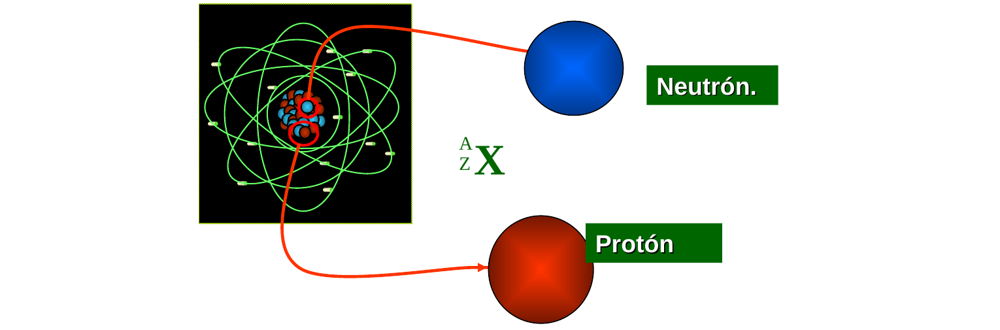
Formación de Residentes en P.R., Complejo Asistencial de Zamora, Nov. 2026
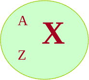
A= número másico = número de neutrones + número de protones.
Z= número atómico = número de protones = número de electrones.
X= Elemento químico
- Las propiedades del elemento químico están fijadas por Z
- Átomos con el mismo Z y distinto A siguen siendo el mismo elemento. Se les conoce como isótopos
- Átomos con el mismo N (=A-Z) y distinto Z son átomos diferentes. Se les conoce como isótonos.
- Átomos con el mismo A pero distinto N y distinto Z son distintos elementos. Se les conoce como isóbaros.
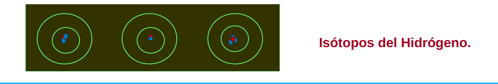
Formación de Residentes en P.R., Complejo Asistencial de Zamora, Nov. 2026
ELEMENTO QUÍMICO:
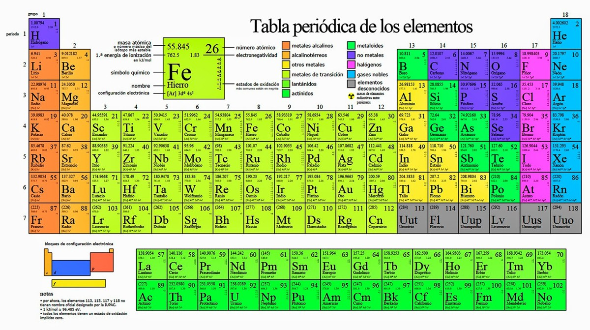
Formación de Residentes en P.R., Complejo Asistencial de Zamora, Nov. 2026
- Conocemos 3600 núcleos diferentes. Solo 275 son estables (7%)
- Elementos estables: No se desintegran, cuando aproximadamente #protones ~ #neutrones
- Elementos: 118; Naturales: 83
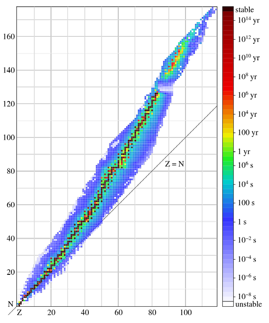
Formación de Residentes en P.R., Complejo Asistencial de Zamora, Nov. 2026
Compensación:
* FUERZAS REPULSIÓN ++ (protones)
* FUERZAS NUCLEARES DE ATRACCIÓN
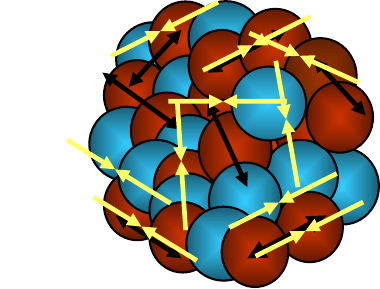
- Los nucleones pueden existir en diversos estados de energía muy definidos.
- El estado que corresponde al nivel de energía más bajo es el estado fundamental
NÚCLEO INESTABLE: emite partículas o radiación para alcanzar la estabilidad: RADIACTIVIDAD.
Depende: nº de nucleones y su estado de energía
Formación de Residentes en P.R., Complejo Asistencial de Zamora, Nov. 2026
ENERGÍA DE ENLACE NUCLEAR:
La masa del núcleo atómico es menor que la suma de las masas de sus componentes (protones + neutrones): defecto másico o energía de amarre
Energía necesaria para romper un núcleo en sus componentes separadamente ( Z protones y N neutrones):
¡¡La diferencia de masa se transforma en energía!!
E = mc2
Ej: Deuterio 2H
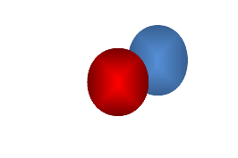
Masanúcleo: 2,014102 u.a.m.
Masaprotón: 1,007277 u.a.m.;
Masaneutrón: 1,008665 u.a.m.
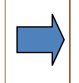
Masanúcleo – (Masaprotón + Masaneutrón) =
=2,014102 - 2,016491 u.a.m. =
=- 0,002389 u.a.m. = -2,23 MeV
Formación de Residentes en P.R., Complejo Asistencial de Zamora, Nov. 2026
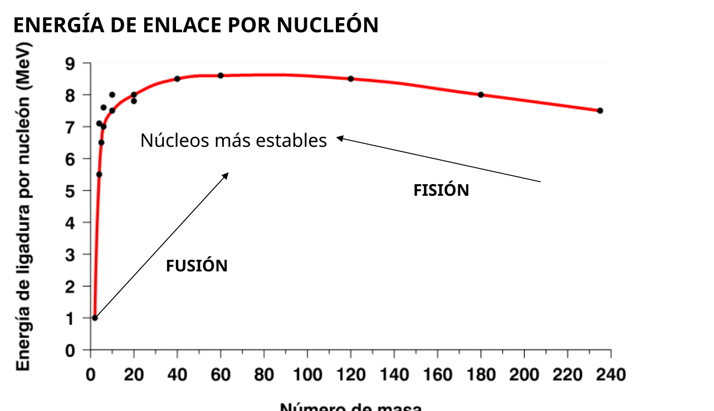
Números mágicos (Z): confieren a los núcleos "mágicos" una gran estabilidad. (Ej:A= 4; A= 16, etc.)
Para Z muy alto: ISLA DE ESTABILIDAD
Formación de Residentes en P.R., Complejo Asistencial de Zamora, Nov. 2026
Emisión espontánea de partículas o radiación por núcleos atómicos inestables. >> el núcleo se transforma dando lugar a otro núcleo estable o inestable.
UN NÚCLEO PUEDE SER INESTABLE POR:
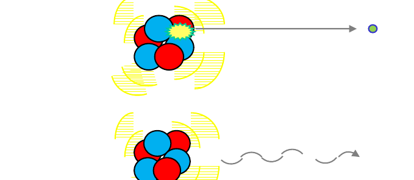
Desequilibrio entre sus componentes
(PROTONES y NEUTRONES)
Exceso de ENERGÍA
• RADIACTIVIDAD NATURAL: propia de los cuerpos tal y como aparecen en la naturaleza. Uranio (232U), Carbono-14 (14C), Potasio-40 (40K)
• RADIACTIVIDAD ARTIFICIAL: núcleos que han alcanzado la inestabilidad mediante el bombardeo con partículas
Formación de Residentes en P.R., Complejo Asistencial de Zamora, Nov. 2026
nº de transformaciones nucleares por unidad de tiempo (Bequerelio=Bq= nº transformaciones/s)
A = N · λ
→
λ = probabilidad de que un átomo se desintegre por unidad de tiempo;
N = nº átomos
Comportamiento exponencial
A = A0 e-(λ·t)
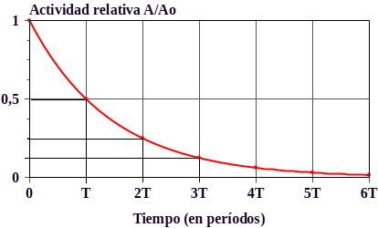
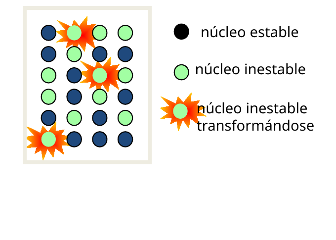
Formación de Residentes en P.R., Complejo Asistencial de Zamora, Nov. 2026
Las sustancias radiactivas se transforman en estables
CADA radionucleido SE CARACTERIZA POR SU PERIODO DE SEMIDESINTEGRACIÓN
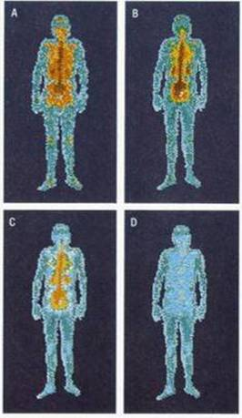
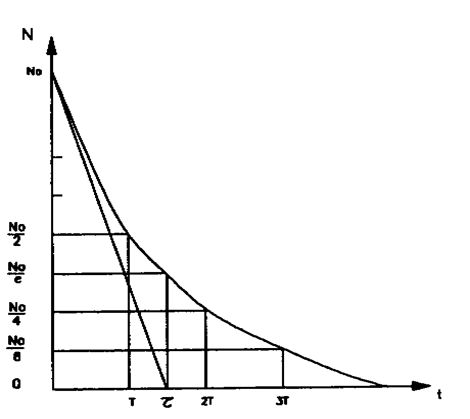
El número inicial de átomos radiactivos se reduce a la mitad a cada paso de un tiempo T (período de semidesintegración)
T1/2 = ln( 2)/ λ
PERIODO DE SEMIDESINTEGRACIÓN:
Ritmo de desintegración: tiempo que ha de transcurrir para que la actividad de la muestra decaiga a la mitad
Formación de Residentes en P.R., Complejo Asistencial de Zamora, Nov. 2026
1) DESINTEGRACIÓN ALFA
α: NÚCLEOS DE HELIO
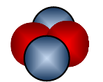
POCO PENETRANTES: una hoja de papel o unos centímetros en aire la frenan
- Depositan toda su energía en un recorrido muy corto.
- Propias en la desintegración de núcleos pesados.
- Suelen ir acompañadas de desintegración gamma
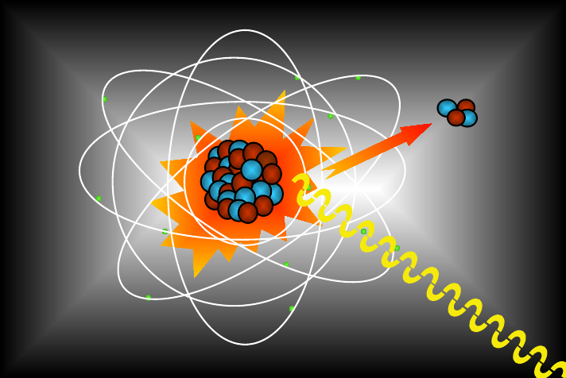
235U (Uranio)
241Am (Americio)
226Ra (Radio)
222Rn (Radón)
Formación de Residentes en P.R., Complejo Asistencial de Zamora, Nov. 2026
1) DESINTEGRACIÓN BETA
β- : ELECTRONES
β+ : POSITRONES
MÁS PENETRANTE: una lámina de aluminio o unos metros en aire la frenan
- Depositan su energía en un recorrido más largo.
- Se producen en núcleos con exceso de neutrones (β- ) o de protones (β+ )
- Suelen ir acompañadas de desintegración gamma
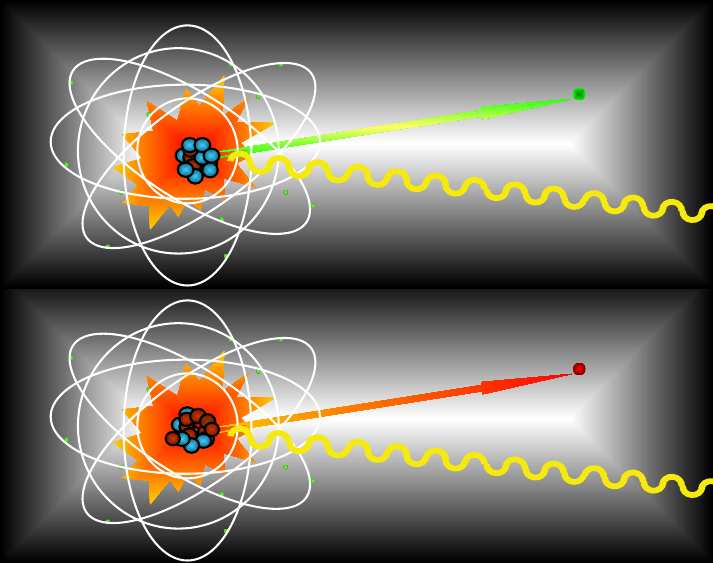
137Cs (Cesio)
60Co (Cobalto)
14C (Carbono)
32P (Fósforo)
3H (Tritio)
22Na (Sodio)
11C (Carbono)
15O (Oxígeno)
13N (Nitrógeno)
Formación de Residentes en P.R., Complejo Asistencial de Zamora, Nov. 2026
1) DESINTEGRACIÓN GAMMA:
ENERGÍA (ondas electromagnéticas)
MUY PENETRANTE : requiere materiales densos y pesados (una lámina de plomo, hormigón, etc.) para ser absorbidos.
Un núcleo con un exceso de energía puede de forma espontánea emitir radiación gamma.
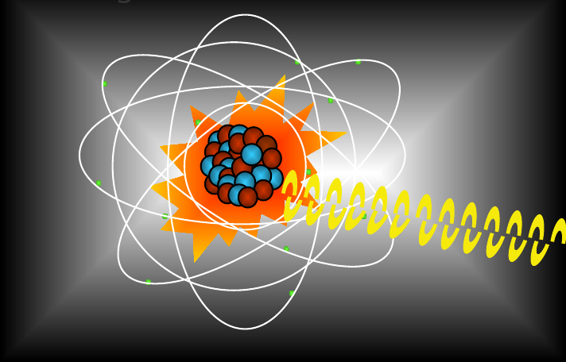
137Cs (Cesio) – (β-) ➔ Ba-137
60Co (Cobalto) – (β-) ➔ Ni –60
99mTc(Tecnecio)
Formación de Residentes en P.R., Complejo Asistencial de Zamora, Nov. 2026
| Radionucleidos Naturales |
Período de semidesintegración |
| Cosmogénicos |
| Hidrógeno-3 |
12.3 años |
| Carbono-14 |
5.7 x103 años |
| Sodio-22 |
2.6 años |
| Corteza terrestre |
| Potasio-40 |
1.3 x 109 años |
| Serie Uranio-235 |
7.0 x 108 años |
| Serie Uranio-238 |
4.5 x 109 años |
| Serie Torio-232 |
1.4 x 1010 años |
Formación de Residentes en P.R., Complejo Asistencial de Zamora, Nov. 2026
Bombardeo nuclear con partículas o fotones de alta energía.
El núcleo resultante puede ser inestable: ¡RADIACTIVIDAD ARTIFICIAL!
B( p, p´)X
BLANCO (proyectil, partícula o fotón desprendido) NÚCLEO
RESIDUAL
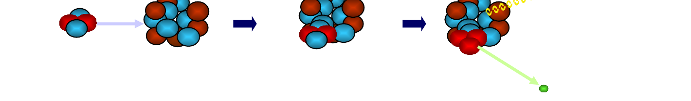
❖ ¡Transmutación de la materia!
❖ ¡Obtención de gran cantidad de energía!
Formación de Residentes en P.R., Complejo Asistencial de Zamora, Nov. 2026
•
REACCIONES DE DISPERSIÓN: El proyectil se dispersa. No hay núcleo compuesto
* Colisión mecánica elástica: no hay alteración nuclear
* Colisión inelástica: núcleo excitado
•
CAPTURA RADIATIVA: El núcleo compuesto
emite radiación
gamma (1 fotón o cascada de fotones)
113Cd (n, γ) 114Cd
•
EMISIÓN DE PARTÍCULAS: El núcleo compuesto
emite partículas
(Típica de núcleos ligeros. En núcleos pesados hay una barrera coulombiana mayor)
6Li(n,α)3H 14N(n,p)14C
•
FOTODESINTEGRACIÓN: El
proyectil es un
fotón
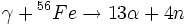
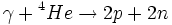
Formación de Residentes en P.R., Complejo Asistencial de Zamora, Nov. 2026
FISIÓN:
El núcleo compuesto se escinde en varios fragmentos asimétricos emitiendo neutrones
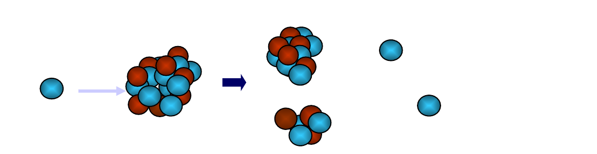
Ej.: 235U bombardeado con un neutrón; en su fragmentación emite otros neutrones
Fermi fue el primero en conseguir una reacción en cadena en un reactor nuclear.
Universidad de Chicago, 1942
FUSIÓN:
varios núcleos ligeros se unen para formar otro más pesado
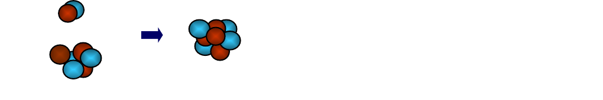
Formación de Residentes en P.R., Complejo Asistencial de Zamora, Nov. 2026
- Estructura del núcleo
- Estabilidad del núcleo
- Radiactividad natural y modos de desintegración
- Radiactividad artificial (reacciones nucleares)
Formación de Residentes en P.R., Complejo Asistencial de Zamora, Nov. 2026
ORIGEN DE LAS RADIACIONES
IONIZANTES
Formación de Residentes en P.R., Complejo Asistencial de Zamora, Nov. 2026
• Cuando el átomo tiene exceso de energía, ésta se puede emitir por los electrones de la corteza en forma de radiación electromagnética. En ocasiones la energía emitida corresponde al espectro de los rayos X (fotones de alta energía)
• Radiación de frenado: Cuando los electrones que penetran en algún medio material se frenan (éste es el fundamento de los equipos de rayos X).
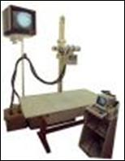
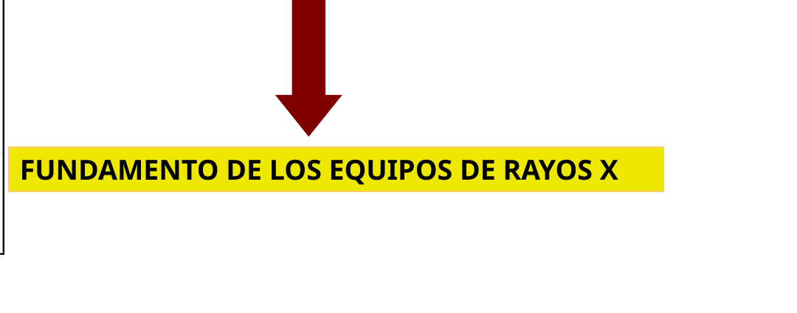
Formación de Residentes en P.R., Complejo Asistencial de Zamora, Nov. 2026
ORIGEN DE LAS RADIACIONES IONIZANTES: LA RADIACTIVIDAD
LA RADIACTIVIDAD:
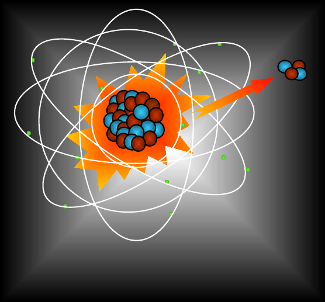
Radiación alfa, beta y gamma.
Emisión de partículas o radiación electromagnética de alta energía debida a la inestabilidad de los núcleos atómicos.
Formación de Residentes en P.R., Complejo Asistencial de Zamora, Nov. 2026
RAYOS X Y RAYOS GAMMA
- Ambos consisten en radiación electromagnética (fotones) de alta energía
- La diferencia en la denominación se debe en parte a motivos históricos
- Se utiliza una denominación u otra según el origen:
- Rayos X: Procesos en la corteza electrónica (nivel atómico) o radiación de frenado
- Radiación gamma: procesos nucleares
Formación de Residentes en P.R., Complejo Asistencial de Zamora, Nov. 2026
INTERACCIÓN DE LA RADIACIÓN
CON LA MATERIA
Formación de Residentes en P.R., Complejo Asistencial de Zamora, Nov. 2026
INTERACCIÓN DE LA RADIACIÓN CON LA MATERIA
- Fotones
- Partículas cargadas
- Partículas sin carga (Neutrones)
Formación de Residentes en P.R., Complejo Asistencial de Zamora, Nov. 2026
INTERACCIÓN DE LOS FOTONES CON LA MATERIA:ATENUACIÓN (I)
Cuando la radiación electromagnética (Rayos X ó gamma) penetra en un medio natural disminuye el número de fotones por unidad de recorrido (ATENUACIÓN) debido a dispersiones y absorciones.
ATENUACIÓN: N = N0 e -µx
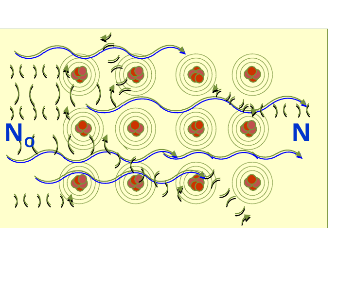
x = longitud recorrida
µ = Coeficiente de atenuación lineal= probabilidad de interacción por unidad de recorrido
Fórmula válida si:
- Fotones monoenergéticos
- Haz colimado
- Absorbente delgado
Formación de Residentes en P.R., Complejo Asistencial de Zamora, Nov. 2026
INTERACCIÓN DE LOS FOTONES CON LA MATERIA:ATENUACIÓN (II)
COEFICIENTE DE ATENUACIÓN MÁSICO: µm = µ/ρ (cm 2/g)
Ley de atenuación: N = N0 e -µmxm ; donde xm= x·ρ
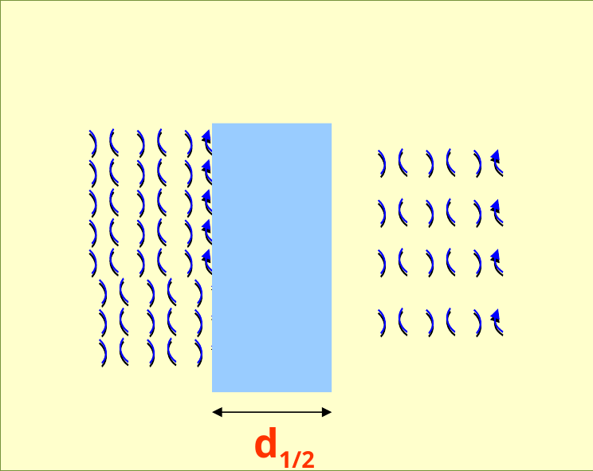
ESPESOR DE SEMIRREDUCCIÓN:
Grosor del material que consigue atenuar el haz a la mitad:
d1/2= Ln(2) / µ = 0.693/
µ
Formación de Residentes en P.R., Complejo Asistencial de Zamora, Nov. 2026
INTERACCIÓN DE LOS FOTONES CON LA MATERIA:ATENUACIÓN (III)
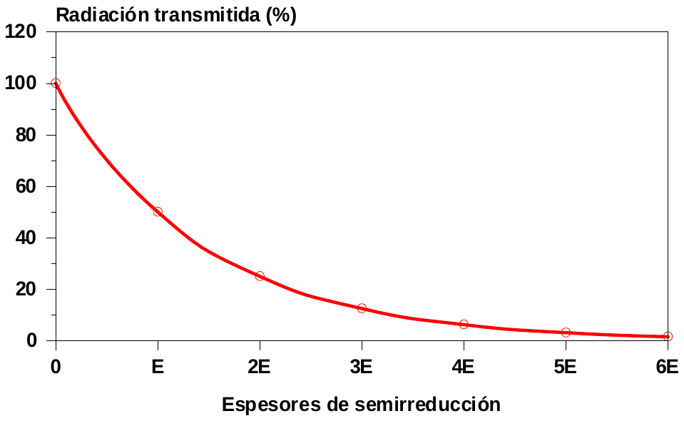
ATENUACIÓN DE LA RADIACIÓN ELECTROMAGNÉTICA
Formación de Residentes en P.R., Complejo Asistencial de Zamora, Nov. 2026
INTERACCIÓN DE LOS FOTONES CON LA MATERIA:PROCESOS DE INTERACCIÓN (I)
A) EFECTO FOTOELÉCTRICO
¡ABSORCIÓN!
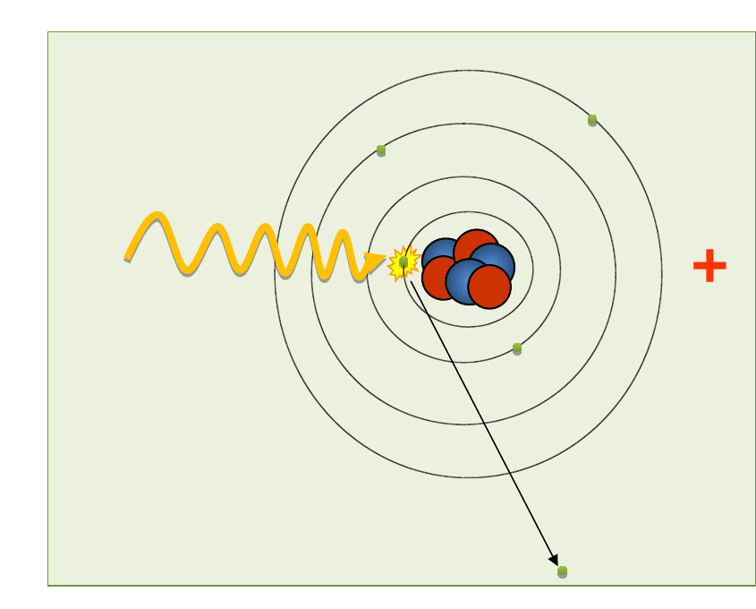
- El fotón interacciona con un electrón de las capas más cercanas al núcleo, cediéndole toda su energía.
- El electrón, si la energía es suficiente, se escapa del átomo.
- El átomo queda ionizado. Un electrón de las capas más alejadas ocupa su lugar emitiendo radiación electromagnética
EFECTO DOMINANTE A ENERGÍAS BAJAS (E < 100 keV)
Formación de Residentes en P.R., Complejo Asistencial de Zamora, Nov. 2026
INTERACCIÓN DE LOS FOTONES CON LA MATERIA:PROCESOS DE INTERACCIÓN (II)
B) EFECTO COMPTON
¡Dispersión!
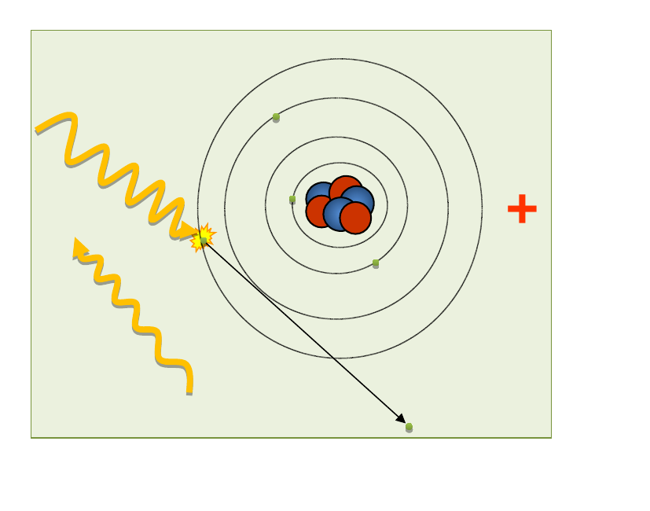
- El fotón interacciona con un electrón poco ligado, cediéndole parte de su energía.
- El electrón se escapa del átomo.
- El átomo queda ionizado.
EFECTO DOMINANTE A ENERGÍAS INTERMEDIAS (100<E<1.000 kev)
Formación de Residentes en P.R., Complejo Asistencial de Zamora, Nov. 2026
INTERACCIÓN DE LOS FOTONES CON LA MATERIA:PROCESOS DE INTERACCIÓN (III)
C) CREACIÓN DE PARES
E = m c2
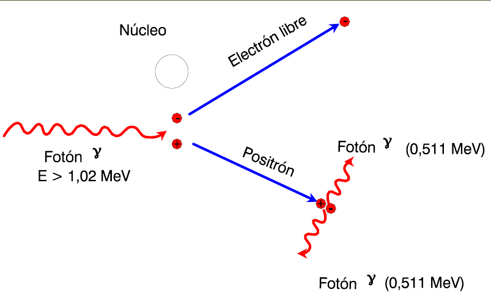
- El fotón, si su energía es superior a 1.022 keV, debido a la presencia de un núcleo atómico, se materializa en un electrón y un positrón.
- El electrón interacciona en el medio.
- El positrón se aniquila con un electrón, emitiendo dos fotones de 511 keV cada uno.
EFECTO DOMINANTE A ENERGÍAS ALTAS ( E>1.022 keV )
Formación de Residentes en P.R., Complejo Asistencial de Zamora, Nov. 2026
INTERACCIÓN DE LOS FOTONES CON LA MATERIA:CURVAS DE ATENUACIÓN
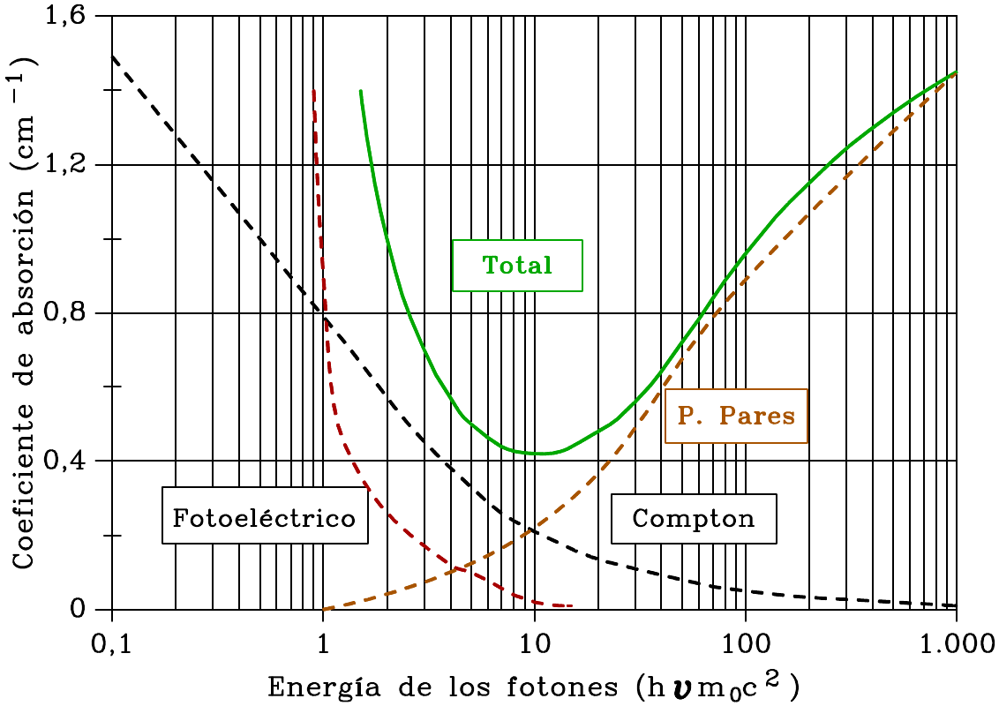
Variación con la energía de los coeficientes de atenuación
Formación de Residentes en P.R., Complejo Asistencial de Zamora, Nov. 2026
INTERACCIÓN DE LAS PARTÍCULAS CON LA MATERIA: INTRODUCCIÓN
➔ Cuando las partículas interaccionan con la materia producen una serie de efectos, que son función de:
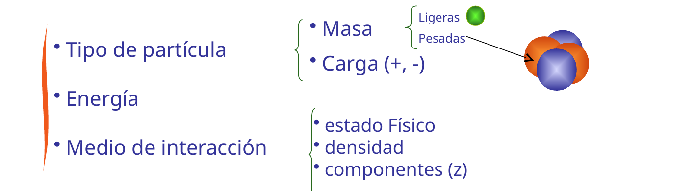
TIPOS DE COLISIÓN:
· colisión elástica (sin alteración atómica ni nuclear)
· colisión inelástica (provoca ionización y excitación)
· colisión radiativa (emisión de radiación electromagnética)
Formación de Residentes en P.R., Complejo Asistencial de Zamora, Nov. 2026
INTERACCIÓN DE LAS PARTÍCULAS CON LA MATERIA: COLISIÓN ELÁSTICA
La partícula choca con los átomos del medio desviándose de su trayectoria y cediendo energía en forma de energía cinética.
No se produce alteración atómica ni nuclear en el medio.
Formación de Residentes en P.R., Complejo Asistencial de Zamora, Nov. 2026
INTERACCIÓN DE LAS PARTÍCULAS CON LA MATERIA: COLISIÓN INELÁSTICA
La partícula interacciona con los electrones atómicos transfiriendo a estos energía. Produciéndose:
ionización del átomo
excitación del átomo
Disociación o radiólisis de las moléculas
Formación de Residentes en P.R., Complejo Asistencial de Zamora, Nov. 2026
INTERACCIÓN DE LAS PARTÍCULAS CON LA MATERIA: COLISIÓN RADIATIVA
➤ La energía de la radiación electromagnética depende de la energía inicial de la partícula de lo “mucho” o “poco” que se frenen.
➤ Más intenso para electrones
➤ Es el fundamento de los equipos de Rayos X
La partícula se frena ante las proximidades de un núcleo atómico y emite radiación
Formación de Residentes en P.R., Complejo Asistencial de Zamora, Nov. 2026
INTERACCIÓN DE LAS PARTÍCULAS CON LA
MATERIA: PODER DE FRENADO Y ALCANCE (I)
El poder de frenado S(E): la pérdida de energía que experimenta una partícula de energía E en un material determinado por unidad de recorrido.
Poder de frenado másico:
El alcance (cm) de una partícula en un medio se define como el recorrido total de la partícula en el material, supuesto el recorrido rectilíneo.

Formación de Residentes en P.R., Complejo Asistencial de Zamora, Nov. 2026
INTERACCIÓN DE LAS PARTÍCULAS CON LA
MATERIA: PODER DE FRENADO Y ALCANCE (II)
Partículas ligeras:
• Colisiones elásticas
provocan importantes desviaciones en su trayectoria, resultando ésta, por tanto, irregular y en zigzag.
• Colisiones inelásticas
• Colisiones radiativas
pierden su energía provocando excitaciones e ionizaciones en los átomos del medio (colisiones inelásticas, C.I.) y emitiendo fotones (colisiones radiativas C.R.)
Formación de Residentes en P.R., Complejo Asistencial de Zamora, Nov. 2026
INTERACCIÓN DE LOS NEUTRONES CON LA
MATERIA
Partículas sin carga -> ¡Gran penetración en la materia!
1. DISPERSIONES ELÁSTICAS CON LOS NÚCLEOS DEL MATERIAL:
Ej.: núcleos de hidrógeno-> protones de retroceso
Los neutrones van perdiendo energía -> la energía cinética media de los átomos o moléculas del medio
Neutrones de baja energía: neutrones térmicos
2. DISPERSIONES INELÁSTICAS:
El núcleo, después del choque, queda en estado excitado -> emisión, en general, de un fotón gamma
3. ABSORCIÓN DEL NEUTRÓN POR UN NÚCLEO DEL MATERIAL:
Reacciones nucleares ( captura radiativa, emisión de partículas o fisión):
6Li (n, α) 3He ; 10B (n, α) 7Li ;
27Al (n, p) 27Mg ; 113Cd (n, γ) 114Cd
Formación de Residentes en P.R., Complejo Asistencial de Zamora, Nov. 2026
RESUMEN
-
●
Procesos de interacción de los fotones, atenuación
-
●
Procesos de interacción de las partículas cargadas,
recorrido libre medio
-
●
Procesos de interacción de las partículas sin carga
(neutrones)
Formación de Residentes en P.R., Complejo Asistencial de Zamora, Nov. 2026